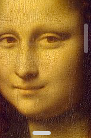
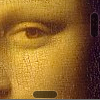
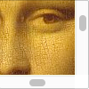

finbars custom scrollbar moduleHypergrid uses custom scrollbars (finbars) which can be fully styled and which are not subject to limitations of the various browsers’ coordinate systems.
The Hypergrid scrollbars (“finbars”) are simple HTML, styled with CSS:
div class="finbar-horizontal"div class="thumb"divdiv div class="finbar-vertical"div class="thumb"divdiv
The default stylesheet for the scrollbars
(finbars.css, automatically injected into the DOM by the Finbar constructor) mimics the trackpad system scrollbars, c. 2015, which looked something like the screenshot at right:
Scrollbar positioning: The scrollbars are superimposed over the content, near the edges.
Gutter style: The scrollbars’ gutters are completely hidden; just their thumbs are visible.
Thumb style: The thumbs are capsule shaped and filled with a light grey color. This color works well enough over this photo. Over a white background they are much harder to see (even with their slightly darker borders).
Thumb opacity: The vertical scrollbar thumb is shown at 40% opacity (i.e., translucent), further reducing its brightness, making it even harder to see. The horizontal scrollbar thumb is shown here at 100% opacity only because the mouse was hovering over it when the screenshot was taken (the mouse pointer was not captured in the screenshot).
Apple has since improved on their system scrollbar style, while the default finbars stylesheet has remained a fossil from 2015.
The following observations are of 10.13 (High Sierra):
trackpad scrollbars, c. 2018:
|  |
|
mouse scrollbars, c. 2018 (i.e., when a mouse is plugged into the Mac):
|  |
|
Go to the next page for a discussion on the specifics of the default finbars stylesheet.